Začínáme
Rackmate hostuje Audio Units, takže Mac může v dawless studiu fungovat jako další nástroj a DAW přitom vůbec nespouštíte. Potřebuje macOS 15 nebo novější na Apple silicon. Umí jen Audio Units a hraje na pluginy, které už na Macu máte.
- Stáhněte obraz disku ze stránky ke stažení a otevřete ho.
- Přetáhněte Rackmate do složky Aplikace a spusťte ho odtamtud. Otevře se úvodní obrazovka.
- Zvolte New rack. Pokud má vaše zvukové zařízení vstupy, macOS se jednou zeptá na mikrofon; odpovězte mu. Víc v kapitole Přístup k mikrofonu.
- Dialog pro přidání je otevřený a vyhledávání je připravené. Napište pár písmen z názvu pluginu a stiskněte Return. Plugin se objeví jako kanál 1 v racku.
- Na kanálu klikněte na No MIDI pod MIDI in a vyberte své MIDI zařízení. Pak zkontrolujte displej Audio out. Na zařízení se čtyřmi a více výstupy začíná první nástroj na 3-4, ne na 1-2.
- Stiskněte ⌘S a rack pojmenujte. Příště ho najdete na úvodní obrazovce.
Pokud jste Rackmate používali pod starým názvem Pluginarium, vaše racky, presety a nastavení se při prvním spuštění přenesou. Víc v kapitole Kde jsou racky uložené.
Úvodní obrazovka
Aplikace se vždycky otevře tady, na logu Rackmate a seznamu vašich racků. Na zvukové zařízení nesáhne, dokud nějaký rack neotevřete.
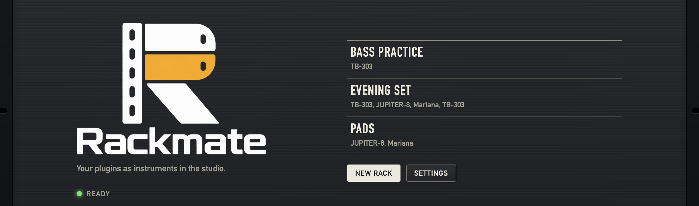
1 2 3 4- 1Ready
- Aplikace je připravená.
- 2Uložené racky
- Jeden řádek na rack, podle abecedy, pod názvem pluginy jednotlivých kanálů. Kliknutím rack otevřete. Dokud nic uloženého nemáte, seznam hlásí No racks yet. Když se řádky nevejdou, seznam se posouvá.
- 3New rack
- Otevře prázdný rack a přes něj dialog pro přidání.
- 4Settings
- Otevře nastavení. Tlačítkem Done se vrátíte sem.
Rack
Hlavní obrazovka. Kanály stojí nad sebou jako jednotky ve studiovém racku a v každé jednotce teče signál zleva doprava. Když je kanálů víc, než se vejde do okna, jednotky se posouvají nahoru a dolů a horní lišta zůstává na místě. Pod poslední jednotkou vyplňuje volnou výšku větrací panel; nic nedělá. Okno se otevírá na 1280 × 760 bodů a jde zmenšit na 1200 × 600.
 1
2
3
1
2
3
- 1Horní lišta
- Rack a stav jeho uložení, MIDI clock, zatížení CPU a nastavení.
- 2Kanály
- Jedna jednotka na nástroj nebo samostatný efekt, očíslované shora.
- 3Add instrument or effect
- Otevře dialog pro přidání nového kanálu.
Rack hraje hned, jak ho otevřete. Tlačítko pro přehrávání tu není: pluginy zní, jakmile dostanou MIDI nebo audio.
Horní lišta
1
2
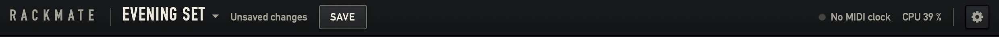
3
4
5
- 1Název racku ▾
- Otevře menu racků, popsané níž. Rack, který ještě nemá jméno, se jmenuje New rack.
- 2Stav uložení
- Saved nebo Unsaved changes, a pokud je co ukládat, i tlačítko Save. Víc v kapitole Ukládání. Nový rack bez kanálů tu neukazuje nic.
- 3MIDI clock
- No MIDI clock se zhasnutou kontrolkou, nebo zdroj a jeho tempo, třeba Hapax clock, 120.0 BPM, a kontrolka bliká do rytmu. Víc v kapitole MIDI clock.
- 4Zatížení CPU
- Kolik z času určeného pro audio aplikace spotřebuje, třeba CPU 17 %.
- 5Ozubené kolo
- Klávesa s tooltipem Settings. Otevře nastavení. Tlačítkem Done se vrátíte do racku a ten mezitím hraje dál.
Hlášení o zvuku se objevují ve stejné liště, vlevo od MIDI clocku: Audio device missing, Audio could not start, Waiting for microphone access a Microphone access denied, inputs are silent. Víc v kapitole Poruchy.
Menu racků
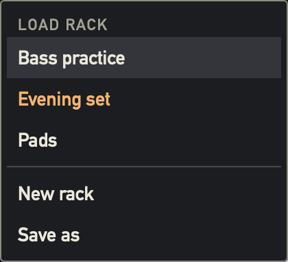
- Load rack
- Vaše racky podle abecedy, aktuální je jantarový. Výběr nahradí to, co právě hraje. Na neuložené změny se aplikace nejdřív zeptá.
- New rack
- Založí prázdný rack a otevře dialog pro přidání.
- Save as
- Uloží kopii pod novým názvem, který začíná starým názvem se slovem copy. Dál pracujete v kopii a původní rack zůstává tak, jak byl uložený.
Kanál
Kanál je jedna jednotka v racku a je v něm jeden nástrojový plugin nebo jeden samostatný efekt. Roste podle toho, co obsahuje, a ukazuje jen to, co jeho plugin umí použít, takže běžný syntezátor nemá žádné displeje pro audio vstupy. Kanál samostatného efektu má trochu jiný odstín panelu.
1
2
3
4
5
6
7
8
9
10
11
- 1Číslo a ×
- Místo kanálu v racku a tlačítko, které ho odebere. Aplikace se nejdřív zeptá Remove channel?
- 2Kontrolka aktivity
- U nástroje blikne zeleně, když přichází MIDI, u samostatného efektu, když přichází audio. Tooltip řekne, který případ to je: Lights when MIDI comes in, nebo Lights when audio comes in.
- 3Displej MIDI in
- MIDI kanál, který plugin poslouchá. U pluginů, které je mají, se v tomto sloupci objeví i displeje Audio in a Sidechain in.
- 4MIDI zařízení
- Odkud plugin dostává noty. Kliknutím otevřete menu zařízení.
- 5Obrázek a název pluginu
- Klávesy u nástroje, vlna u samostatného efektu, pady u pluginu označeného jako sampler. Dlouhý název se zmenší, a když to nestačí, zkrátí se. Celý ho ukáže tooltip.
- 6Displej presetu
- Aktuální zvuk, jantarově. Kliknutím otevřete menu presetů.
- 7Klávesa Open plugin
- Otevře vlastní okno pluginu.
- 8Klávesa Follow Start/Stop
- Jestli se plugin rozjíždí a zastavuje s MIDI clockem.
- 9Effects
- Efekty za pluginem, zleva doprava.
- 10Displej Audio out
- Výstupní kanály zvukového zařízení.
- 11Měřiče úrovně
- Segmentové pruhy pro levou a pravou stranu v rozsahu 60 dB. Ukazují, co z kanálu odchází. Jsou zelené, od 68 % pruhu žluté a od 88 % červené.
Dvě čtvercové klávesy mají obrázek a žádný text. Když na klávese podržíte ukazatel, ukáže se její název. Klávesa, která je zapnutá, svítí zeleně. Jantarová patří displejům, zelená tomu, co svítí, a červená poruchám.
Displeje
Každá cesta na kanálu je hodnota na displeji a kliknutím na hodnotu otevřete její menu. Číslice jsou sedmisegmentové a nerozsvícené segmenty zůstávají slabě vidět, stejně jako na hardwaru. Když je ukazatel nad displejem, který jde otevřít, jeho rámeček se zbarví jantarově.
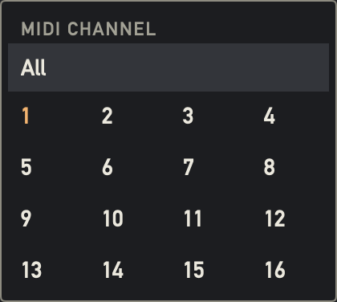
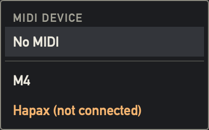
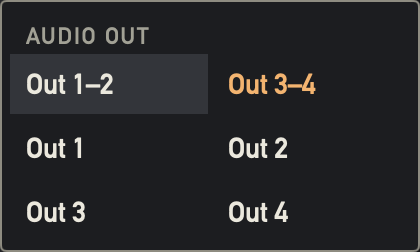
V těchto menu je aktuální hodnota jantarová. Kliknutí kamkoli jinam menu zavře.
MIDI in
Mají ho pluginy, které berou MIDI. Displej ukazuje 1 až 16, nebo ALL pro všechny kanály. Bez zařízení ukazuje zašedlé --- a neotevírá se. Kliknutím vyberete All nebo kanál 1 až 16.
Pod displejem je malým písmem zařízení. Kliknutím vyberete No MIDI nebo některý z MIDI zdrojů, jak je hlásí macOS, pod jejich systémovými názvy, včetně virtuálních portů. Nové zařízení si nechá filtr kanálu a kanál, který žádné zařízení neměl, začíná na All.
Zdroj, který zmizel, zůstává v seznamu jako Hapax (not connected) a místo zařízení svítí červeně Hapax is not connected. Zařízení za MIDI routerem může v seznamu zůstat i vypnuté, protože macOS dál hlásí port routeru.
Audio in
Má ho plugin s hlavním audio vstupem, třeba vokodér, a vždycky samostatný efekt. Displej ukazuje stereo pár, třeba 3-4 nebo 11-12, mono kanál, třeba 3, nebo zašedlé OFF. Menu nabízí ve dvou sloupcích každý vstup zvukového zařízení jako mono kanál, třeba In 1, a pak stereo páry, třeba In 1–2.
U nástroje začíná na Off, aby se do syntezátoru se vstupem nedostal signál omylem, a vokodér je bez mikrofonu, dokud mu ho nevyberete. Samostatný efekt Off nemá, protože jiný zdroj nemá. Plugin, který bere modulátor přes sidechain, ukáže místo toho Sidechain in.
Sidechain in
Má ho plugin se sidechainovým vstupem. Funguje jako Audio in a nabízí stejné vstupy, na začátku Off. Zdrojem je vždycky vstup zvukového zařízení, nikdy jiný kanál. Efekt v řetězci si sidechain nastaví ve svém menu za třemi tečkami.
Audio out
Displej ukazuje cestu stejným způsobem, třeba 3-4. Menu nabízí ve dvou sloupcích stereo páry zvukového zařízení, třeba Out 3–4, a pak jednotlivé mono kanály, třeba Out 3. Víc kanálů může sdílet jeden výstup, jejich signály se sečtou. Cesta, kterou zařízení nemá, zůstává v seznamu, displej svítí červeně a kanál to pod ním hlásí: Out 5–6 is not available on this device.
Open plugin
První klávesa otevře vlastní okno pluginu nad rackem a rozsvítí se zeleně. Její tooltip se změní z Open plugin na Close plugin a dalším stiskem okno zavřete; červené tlačítko okna udělá totéž. Každý plugin má nejvýš jedno okno, velké tak, jak si plugin řekne. Klávesa je zašedlá, dokud plugin nejde otevřít, například když se ještě načítá nebo chybí.
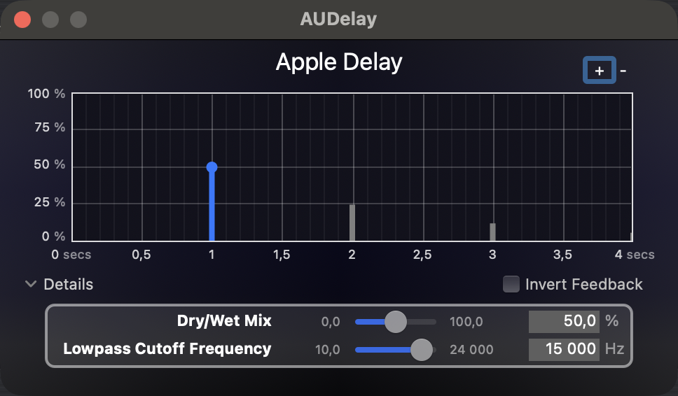
Okna pluginů ustoupí dialogům a nastavení a pak se vrátí tam, kde byla. Plugin bez vlastního vzhledu dostane malé okno s textem This plugin has no window. Efekt otevírá své okno kliknutím na svůj název.
Follow Start/Stop
Druhá klávesa určuje, co plugin uvidí z transportu MIDI clocku. Její tooltip ukazuje Follow Start/Stop: On, nebo Off. Tempo dostane každý plugin tak jako tak.
- Klávesa svítí, zapnuto
- Plugin vidí tempo i transport, takže arpeggiator nebo vnitřní sekvencer běží s vaším sekvencerem.
- Klávesa nesvítí, vypnuto
- Plugin vidí jen tempo a transport pro něj pořád stojí. Delay drží tempo a vnitřní sekvencer se nerozjede.
U nástrojů je klávesa na začátku vypnutá, aby se sekvencer nerozjel s partem, o který jste nestáli. U efektů, samostatných i v řetězci, je zapnutá. Ukládá se do racku. Noty a kontrolery jdou podle MIDI in bez ohledu na klávesu.
Presety
Preset je pojmenovaný otisk zvuku pluginu. Patří k pluginu, takže ho máte v každém racku, který ten plugin používá. Displej presetu na kanálu ukazuje aktuální zvuk:
- Default sound
- Plugin tak, jak se načte, nedotčený. Vybrat ho jde jen při přidání pluginu.
- Název
- Váš preset, nebo tovární preset.
- Custom sound
- Zvuk jste změnili v okně pluginu a žádný preset vybraný nebyl.
- Název s (changed)
- Zvuk jste změnili potom, co jste vybrali svůj preset. Tovární presety tuhle značku nikdy nedostanou.
Pluginy o změně zvuku nedají vědět. Rackmate proto porovná stav pluginu při otevření a zavření jeho okna, takže se změna projeví, když okno zavřete nebo uložíte.
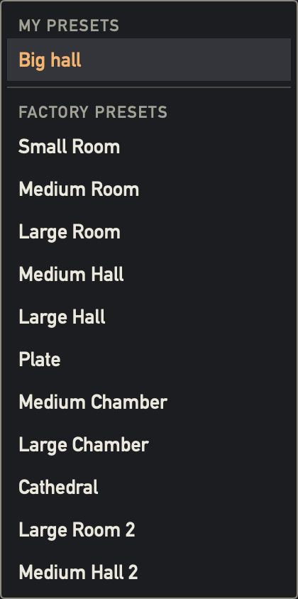
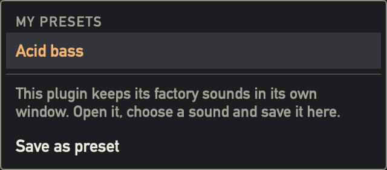
- My presets
- Presety, které jste pro tento plugin uložili, nebo None saved yet. Aktuální je jantarový.
- Factory presets
- Zvuky, které plugin nabízí přes Audio Unit.
- Save as preset
- Zeptá se na název a uloží zvuk, který plugin právě má. Stejný název u stejného pluginu starý preset nahradí. Pole začíná názvem aktuálního zvuku.
Proč některé pluginy tovární seznam nemají
Jestli hostitel uvidí tovární zvuky, rozhoduje plugin. Mariana je nabízí, TB-303 a JUPITER-8 je drží ve vlastním okně. U takového pluginu menu říká This plugin keeps its factory sounds in its own window. Open it, choose a sound and save it here. Stačí to udělat jednou a zvuk je od té chvíle váš preset.
Co se stane s uloženým presetem
Preset je uložený natrvalo v tu chvíli, kdy ho uložíte, i když pak u racku zvolíte Don't save. Na rack čeká jen to, že ho používá. Víc v kapitole Ukládání. Rack drží úplný stav každého pluginu, takže pozdější změna presetu dřív uložený rack nezmění.
Efekty
Efekty v řetězci kanálu zpracovávají plugin toho kanálu. Signál dostávají z řetězce, takže jediný vstup, který můžou mít, je sidechain. Řetězec běží zleva doprava, a když se nevejde, posouvá se do strany.
1
2
3
- 1Paralelně
- Efekty nad sebou v jednom stupni běží paralelně, spojené závorkami. Ve stupni můžou být až tři. Větve se sčítají ve stejné úrovni; poměr nastavíte ovladači wet a dry v jednotlivých pluginech.
- 2Sériově
- Stupně běží zleva doprava, spojené šipkami, a každý krmí ten další.
- 3Plus
- Přidá efekt. Víc v části Add effect.
1
2
3
4
- 1Obrázek
- Ve slotu užším než 150 bodů se skryje.
- 2Název
- Jantarově. Kliknutím otevřete nebo zavřete vlastní okno efektu. Dokud je okno otevřené, název je bílý. Tažením za název efekt přesunete.
- 3Kontrolka
- Vypínač efektu. Zelená znamená zapnuto.
- 4Tři tečky
- Otevřou menu za třemi tečkami. Tooltip je Menu.
Zapnutí a vypnutí
Kliknutím na kontrolku efekt vypnete nebo zapnete. Totéž udělá Turn effect off nebo Turn effect on v jeho menu. Stav se ukládá s rackem a změna rack označí jako neuložený. Vypnutý efekt má zhasnutou kontrolku a šedý název.
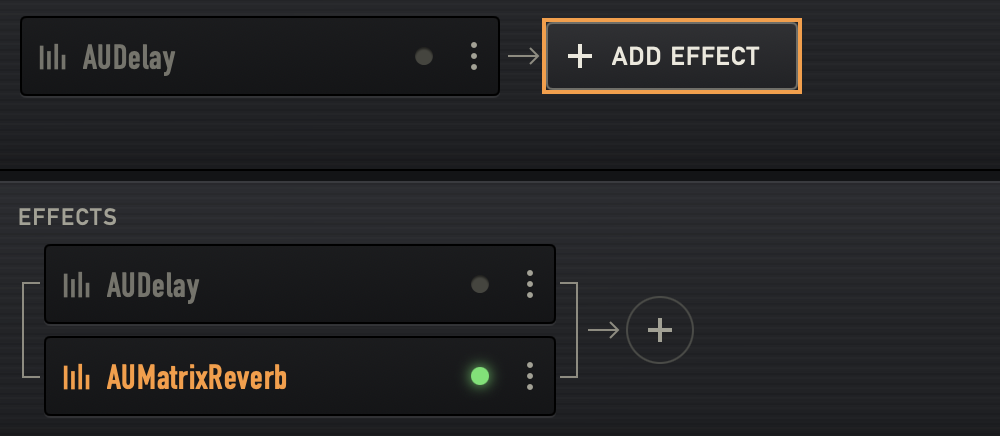
Vypnutý efekt zůstává načtený a drží si okno, presety i stav. Z cesty signálu ale vypadne:
- V sérii jím signál projde beze změny.
- V paralelním stupni vypadne ze součtu, takže úroveň neskočí.
- Když jsou vypnuté všechny efekty stupně, stupeň pustí signál dál suchý.
Vypnutí efektu utne jeho dozvuk a to, co zůstalo v jeho bufferech, se může ozvat, až ho zase zapnete.
Add effect
Kulaté plus na konci řetězce se rozbalí do tlačítka s nápisem Add effect, když je nad ním ukazatel nebo má fokus klávesnice, a pak se zase složí. Se zapnutou volbou Omezit pohyb v macOS se změní bez animace. Otevře dialog pro přidání a efekt dá do nového stupně na konec řetězce.
Menu za třemi tečkami
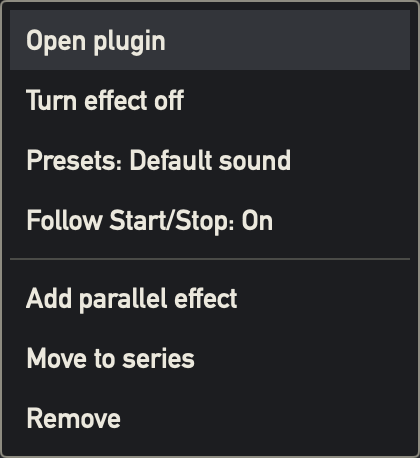
- Open plugin / Close plugin
- Vlastní okno efektu, stejně jako kliknutí na název.
- Turn effect off / Turn effect on
- Totéž co kliknutí na kontrolku.
- Presets: Default sound
- Ukáže aktuální zvuk a otevře menu presetů.
- Sidechain in: Off
- Jen u pluginu se sidechainem. Vyberte vstup zvukového zařízení. Ve slotu se pak objeví třeba Sidechain from In 1.
- Follow Start/Stop: On
- Přepne Follow Start/Stop pro tento efekt.
- Add parallel effect
- Otevře dialog pro přidání a efekt dá do tohoto stupně. Když jsou ve stupni tři, položka zmizí.
- Move to series
- Jen v paralelním stupni. Přesune efekt do nového stupně hned za tímto.
- Remove
- Odebere efekt hned, bez ptaní.
Přetahování
Efekt přesunete tažením za jeho název. Tažení začne po 5 bodech. Efekt na svém místě ztmavne, za ukazatelem jde jeho kopie a jantarová čára ukazuje, kam dopadne.
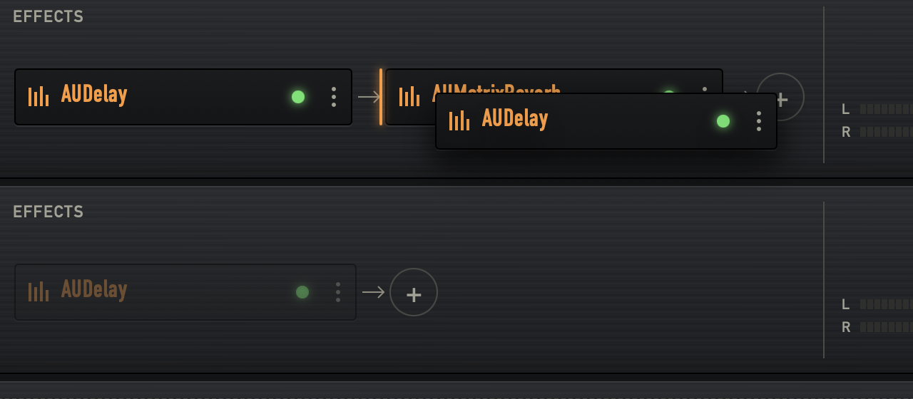
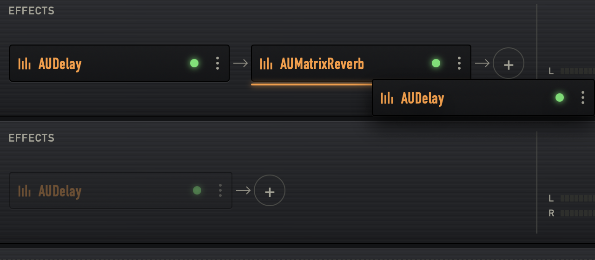
- Vnějších 30 % šířky slotu
- Nový stupeň v sérii před stupněm tohoto slotu, nebo za ním.
- Prostředek slotu
- Paralelně, do stupně tohoto slotu: z horní poloviny nad slot, z dolní pod něj. Stupeň se třemi efekty nabízí jen strany.
- Kdekoli jinde v oblasti efektů kanálu
- Konec řetězce tohoto kanálu, i když je řetězec prázdný.
- Na samotném efektu, nebo mimo oblasti efektů
- Nic se nezmění.
Tažení může skončit v jiném kanálu. Plugin se znovu nenačítá a drží si zvuk, jeho otevřené okno se nejdřív zavře. Přesun označí rack jako neuložený. Efekt, který se nenačetl, přetáhnout nejde.
Kanál mimo dohled dosáhnete tak, že tažení podržíte do 40 bodů od horního nebo dolního okraje racku. Rack se stálým tempem posouvá k tomuto okraji a zastaví se na svém konci, nebo když ukazatel od okraje odjede.
Dialog pro přidání
Tentýž dialog přidává kanál, přidává efekt a nahrazuje chybějící plugin. Nový rack ho otevře hned a vyhledávání je připravené, takže stačí pár písmen a Return.
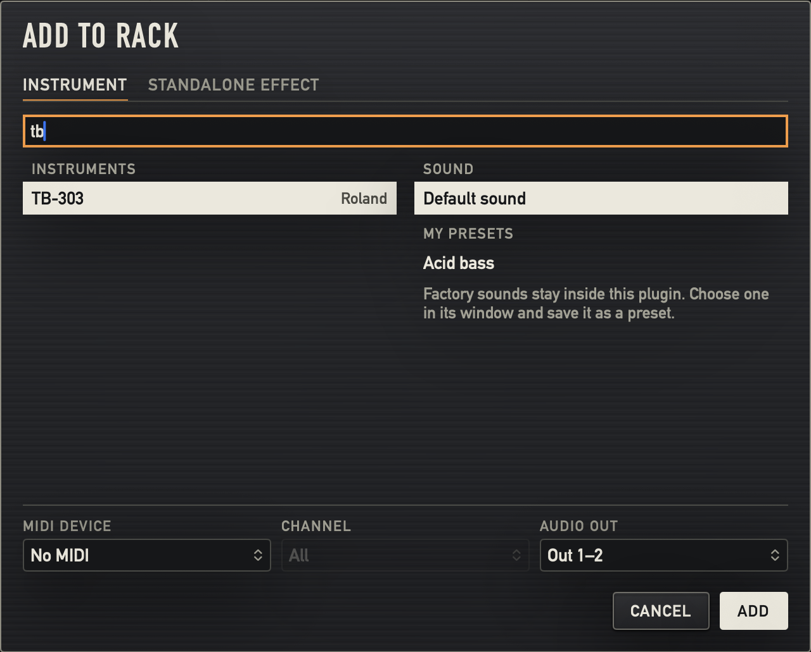
1 2 3 4 5 6- 1Instrument a Standalone effect
- Jen při přidávání kanálu. Nástroje jsou Audio Units typu
aumuaaumf, efektyaufx. - 2Search plugins
- Filtruje podle názvu pluginu a výrobce už při psaní. Když nic nezbude, hlásí No plugin matches this search.
- 3Seznam pluginů
- Recent je posledních pět přidaných pluginů, pod nimi All všechny ostatní. Bez nedávných pluginů má seznam nadpis Instruments nebo Effects.
- 4Sound
- Default sound, pak My presets a Factory presets vybraného pluginu. Plugin bez továrního seznamu ukáže Factory sounds stay inside this plugin. Choose one in its window and save it as a preset.
- 5Zapojení
- Pole, která plugin má: MIDI device, Channel, Audio in, Sidechain in a Audio out. Začínají podle tabulek pozic a změnit je můžete tady, nebo později na kanálu. Jen při přidávání kanálu.
- 6Cancel a Add
- Při nahrazení pluginu se druhé tlačítko jmenuje Replace.
Když plugin vyberete poprvé, aplikace ho jednou načte, aby zjistila jeho vstupy a presety, a odpověď si zapamatuje. Obrazovka se při tom může na chvíli zastavit. Zvuk na ostatních kanálech běží dál.
Klávesy v dialogu
- Písmena
- Hledání.
- ↓ ↑
- Posouvají výběr v seznamu, na koncích přeskočí na druhou stranu.
- Return
- Přidá vybraný plugin.
- Esc
- Zruší dialog.
Tři způsoby použití
- Add to rack
- Nový kanál, z Add instrument or effect nebo z nového racku.
- Add effect to TB-303
- Efekt do řetězce, z plus nebo z Add parallel effect. Bez záložek a bez zapojení.
- Replace plugin
- Nový plugin pro kanál, jehož plugin chybí. Kanál si nechá zapojení a efekty. Audio in si nechá, pokud ho nový plugin má, a stejně tak sidechain in.
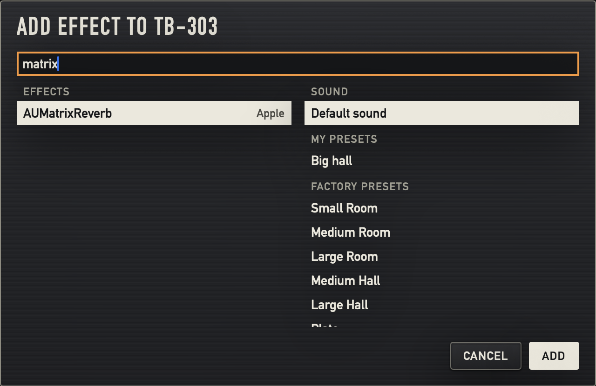
Samostatné efekty
Samostatný efekt je vlastní kanál. Bere signál ze vstupu zvukového zařízení a posílá ho na výstup, takže na něj dosáhne každý hardwarový nástroj zapojený do zvukové karty. Přidáte ho na záložce Standalone effect. Žádný plugin před sebou nemá a může mít vlastní efekty.
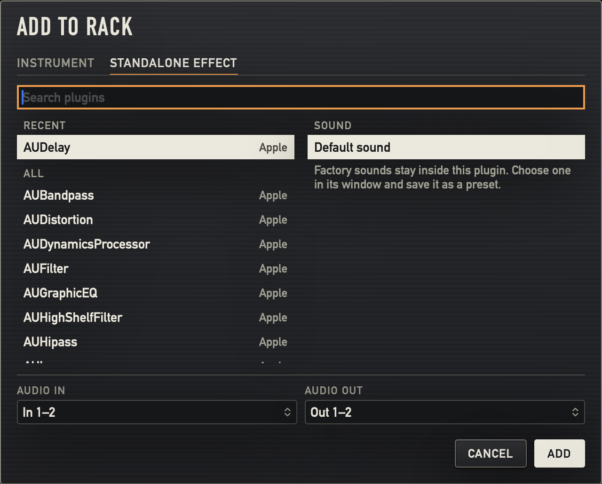
Samostatný efekt začne posílat vstup na výstup hned, jak ho přidáte. Když se výstup dostane zpátky na vstup, třeba přes mikrofon u monitorů, může vzniknout zpětná vazba. Dokud zapojení nesedí, nechte monitory stažené.
Ukládání
Rack drží kanály, zapojení, efekty a úplný stav každého pluginu. Každá změna ho označí jako Unsaved changes a uložíte ho tlačítkem Save nebo ⌘S. Save a Save as jsou i v menu File. Změny v nastavení do racku nepatří a ukládají se hned.
Dokud je otevřené okno pluginu, ukazuje horní lišta Save i vedle Saved, protože v okně může být změna, o které aplikace ještě neví. Uložení se pak nejdřív podívá do otevřených oken, a když se žádný zvuk nezměnil, neudělá nic.
Po uložení to potvrdí řádek dole v okně, třeba Evening set saved.
Na co se aplikace ptá
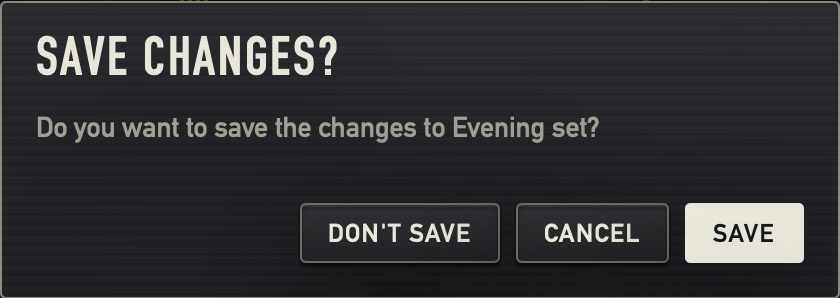
- Save changes?
- Přijde, když s neuloženými změnami načítáte jiný rack, zakládáte nový nebo končíte. Save uloží a pokračuje, Don't save pokračuje a změny zahodí, Cancel zůstane, kde jste. Return znamená Save, Esc znamená Cancel.
- Save rack
- Přijde při prvním uložení nového racku a ptá se na název. Prázdný název potvrdit nejde.
- Save as
- Ptá se na název kopie.
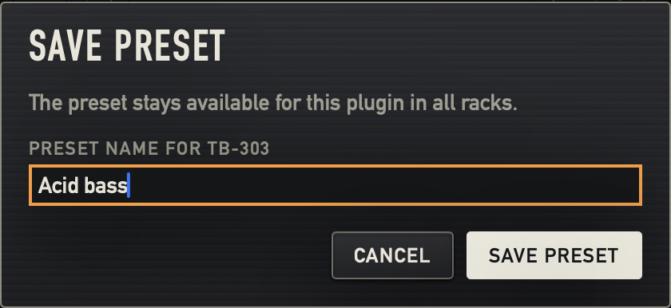
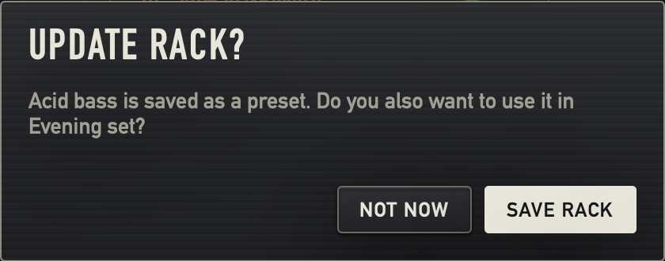
- Save preset
- Ptá se na název presetu. Název je označený, takže ho psaním přepíšete.
- Update rack?
- Přijde po uložení presetu v racku, který už uložený je. Save rack uloží i rack, Not now ho nechá neuložený. Preset je uložený tak jako tak.
- Remove channel?
- Přijde z tlačítka × na kanálu. Remove odebere kanál i s efekty a počítá se to jako každá jiná změna.
V racku, který ještě nikdy uložený nebyl, po uložení presetu žádná otázka nepřijde. Řádek dole řekne, že je preset uložený, a dodá It joins this rack when you save it.
Když aplikace nedokáže přečíst zvuk z pluginu, nechá jeho naposledy uložený stav a řádek dole to oznámí: TB-303 could not be read, its last saved sound was kept.
Kde jsou racky uložené
Všechno je ve složce ~/Library/Application Support/Rackmate:
configurations- Racky, každý v jednom souboru.
presets- Vaše presety, po pluginech.
settings.json- To, co nastavíte v nastavení.
Rackmate se dřív jmenoval Pluginarium. Když při spuštění složka Rackmate neexistuje
a ~/Library/Application Support/Pluginarium ano, stará složka se zkopíruje do
nové. Stane se to jednou. Stará složka se nikdy nepřesouvá, nemění ani nemaže a to, co
v Rackmate uložíte, jde jen do nové. Když se kopírování nepovede, rozdělaná složka se
odstraní a aplikace začne s prázdným seznamem.
Nastavení
Otevřete je z úvodní obrazovky, ozubeným kolem v horní liště nebo klávesami ⌘,. Tlačítkem Done se vrátíte. Nastavení patří aplikaci, ne racku, a každá změna se ukládá hned. Stránka se posouvá.
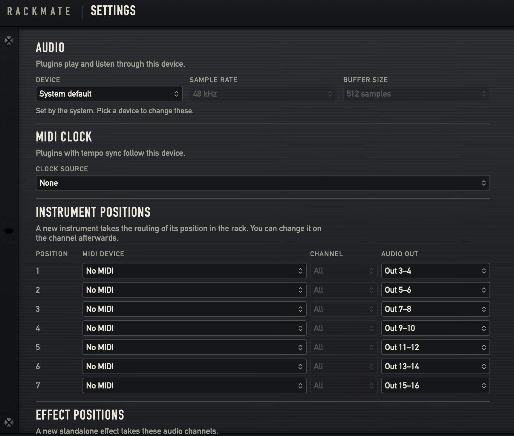
1 2 3 4 5 6- 1Device
- Zvukové zařízení, přes které pluginy hrají a poslouchají: System default nebo zařízení ze seznamu.
- 2Sample rate
- U vybraného zařízení 44.1 kHz, 48 kHz nebo 96 kHz.
- 3Buffer size
- U vybraného zařízení 64 samples, 128 samples, 256 samples nebo 512 samples.
- 4Set by the system. Pick a device to change these.
- Objeví se u System default, kdy obě pole výše jen ukazují, co běží.
- 5Clock source
- None nebo MIDI zdroj. Víc v kapitole MIDI clock.
- 6Instrument positions
- Víc v kapitole Tabulky pozic. Effect positions jsou o kus níž.
Zvukové zařízení: System default, nebo vybrané zařízení
- System default
- Aplikace se řídí výchozím výstupem macOS a do zařízení nic nezapisuje. Běží na vzorkovací frekvenci a bufferu, které zařízení už má, a obě pole je zašedle ukazují. Tady je změnit nejde.
- Vybrané zařízení
- Aplikace zapíše do zařízení vzorkovací frekvenci a velikost bufferu, když se spouští zvuk, a pak při každé jejich změně. Výchozí uložené hodnoty jsou 48 kHz a 128 samples, takže výběr zařízení může změnit jeho dosavadní nastavení i pro ostatní aplikace.
Nové zařízení nebo vzorkovací frekvence restartuje zvuk a znovu načte pluginy; nový buffer restartuje zařízení pod stejnými pluginy. Vybrané zařízení, které zmizelo, zůstává v seznamu jako (not connected). Dokud je nastavení na obrazovce, seznam sleduje, co hlásí macOS.
Tabulky pozic
Nový kanál si vezme zapojení podle své pozice v racku: první nástroj dostane řádek 1 tabulky Instrument positions, druhý řádek 2 a tak dál. Samostatné efekty se počítají zvlášť v tabulce Effect positions. Tabulky si jednou nastavíte podle studia a kterýkoli kanál pak můžete změnit. Změna tabulky existující kanály neovlivní.
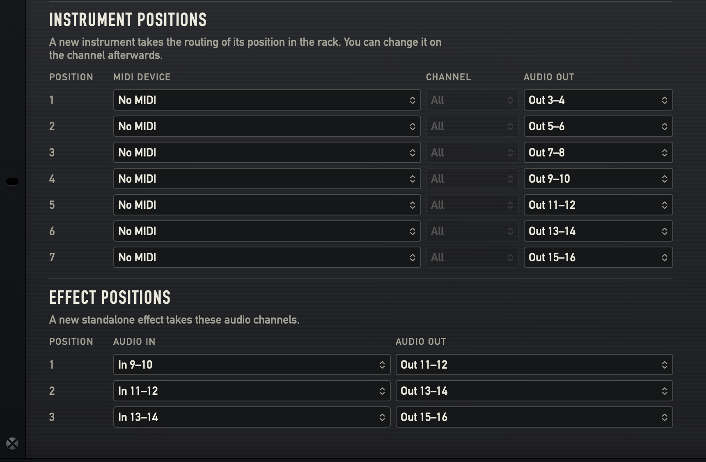
- Instrument positions
- Sedm řádků, každý s MIDI device, Channel a Audio out. Začínají na No MIDI a Out 3–4, pak Out 5–6 a tak dál až po Out 15–16.
- Effect positions
- Tři řádky, každý s Audio in a Audio out. Začínají na In 9–10 do Out 11–12 a každý další řádek je o pár výš.
Za posledním řádkem nové kanály používají ten poslední. Když zařízení kanály dané pozice nemá, nový kanál si vezme první stereo pár, který žádný kanál nepoužívá, a jinak první pár zařízení, takže hraje hned a nezůstane potichu.
MIDI clock
Zdroj vyberete v nastavení v poli Clock source. Pluginy s tempo syncem se jím pak řídí a na kanálech nic nastavovat nemusíte.
Zprávy MIDI clocku do pluginů nikdy nejdou. Clock čte aplikace a každému pluginu předává tempo, pozici a to, jestli transport hraje. Tento transport řídí Start, Stop a Continue ze zdroje a Follow Start/Stop rozhoduje, kdo ho uvidí.
- Hapax clock, 120.0 BPM
- Clock přichází. Kontrolka bliká do rytmu.
- No MIDI clock
- Žádný zdroj není vybraný, nebo clock vteřinu nepřišel. Nezáleží na tom, jestli je zdroj dál připojený. Pluginy drží poslední tempo, a pokud žádné nebylo, 120 BPM. Když zdroj během hraní zmlkne, transport se zastaví.
Klávesnice
- ⌘S
- Save, v menu File.
- ⇧⌘S
- Save as, v menu File.
- ⌘,
- Settings…, v menu Rackmate.
- Return a Esc v dialogu
- Return znamená vyplněné tlačítko, Esc zruší.
- V otevřeném menu
- ↓ ↑ posouvají, v mřížce i ← →. Return nebo Space vybere, Esc zavře. Menu zavře i kliknutí jinam v racku.
- Tab
- Se zapnutou Navigací na klávesnici v nastavení klávesnice v macOS přechází Tab mezi ovládacími prvky a prvek s fokusem má jantarový rámeček.
New rack je v menu File, bez zkratky. Dokud je na obrazovce dialog nebo nastavení, tyto příkazy nefungují. Klávesy dialogu pro přidání jsou popsané u něj.
Poruchy
Rack se otevře vždycky. Co chybí, se ukáže tam, kam to patří, jako červeně svítící text, a zbytek hraje.
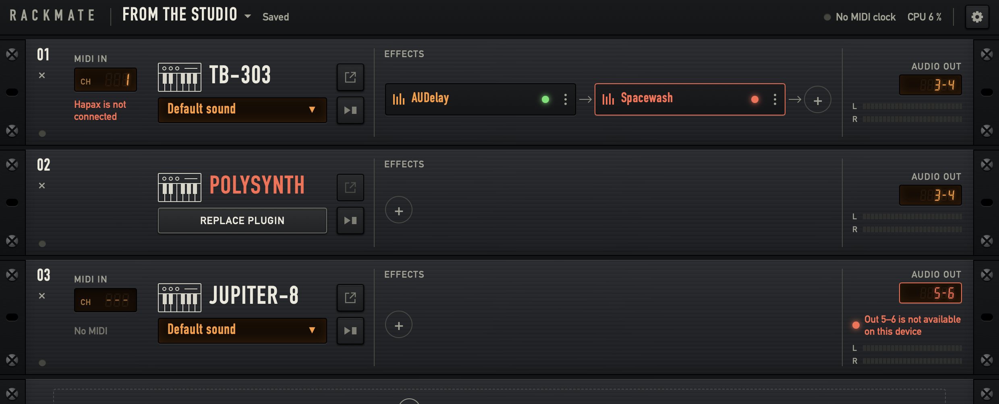
1 2 3 4| Co vidíte | Co to znamená | Co s tím |
|---|---|---|
| 1Hapax is not connected červeně na místě zařízení | macOS tento MIDI zdroj už nehlásí. | Připojte ho, nebo na něj klikněte a vyberte jiný zdroj. Když se zdroj vrátí, cesta se obnoví sama. |
| 2Název pluginu červeně a klávesa Replace plugin na místě presetu | Plugin na tomto Macu není. Tooltip názvu říká Plugin not installed on this Mac. | Stiskněte Replace plugin a vyberte jiný, nebo ho nainstalujte a rack otevřete znovu. Uložený zvuk kanálu zůstává, dokud plugin nenahradíte. |
| 3Červený displej Audio out a Out 5–6 is not available on this device | Zvukové zařízení tento výstup nemá. Chybějící vstup rozsvítí červeně svůj displej. | Vyberte na kanálu jinou cestu, nebo použijte zařízení, které ji má. |
| 4Efekt s červeným rámečkem, názvem a kontrolkou | Efekt se nenačetl nebo není nainstalovaný. Tooltip řekne, který případ to je. Název ani kontrolka nereagují, efekt nejde přetáhnout a jediná položka jeho menu je Remove. | Odeberte ho v menu za třemi tečkami nebo ho nainstalujte. Plugin kanálu hraje dál. |
| Název pluginu červeně a uložený zvuk zašedle na místě presetu | Plugin tu je, ale nespustil se. Tooltip názvu začíná Plugin failed to load a uvádí důvod. | Otevřete rack znovu, nebo plugin vyzkoušejte v jiném hostiteli. |
| Loading zašedle na místě presetu | Plugin se ještě spouští. Některým to trvá několik vteřin. | Počkejte. |
| Audio device missing | Zařízení zmizelo. Rack zůstává otevřený. | Připojte ho a rack zase začne hrát. Nebo vyberte v nastavení jiné zařízení. |
| Audio could not start | Zařízení se nepodařilo spustit. Důvod je v tooltipu. | Ověřte, že zařízení funguje v jiných aplikacích. Aplikace to zkusí znovu při každé změně zařízení. |
| Waiting for microphone access | macOS se vás ptá na mikrofon. Dokud neodpovíte, nic nehraje. | Odpovězte v dialogu macOS. Víc v kapitole Přístup k mikrofonu. |
| Microphone access denied, inputs are silent | macOS aplikaci nedovolí číst vstupy. Výstupy hrají dál. | Víc v kapitole Přístup k mikrofonu. |
| No MIDI clock | Ze zdroje v nastavení nepřichází clock. | Spusťte clock na sekvenceru, nebo zkontrolujte Clock source. |
| Evening set could not be saved | Soubor se nepodařilo zapsat. Rack zůstává neuložený. | Zkontrolujte disk a uložte znovu. |
| Acid bass could not be loaded | Plugin preset nepřijal. | Vyberte jiný zvuk, nebo se podívejte do okna pluginu. |
Přístup k mikrofonu
macOS bere každý audio vstup jako mikrofon. Když poprvé otevřete rack na zařízení se vstupy, macOS se zeptá, jestli Rackmate smí používat mikrofon, a uvede důvod Rackmate plays audio from your interface through your plugins. Stane se to, i když zatím žádný kanál vstup nepoužívá.
Dokud neodpovíte, žádné zvukové zařízení není otevřené: nic nehraje a horní lišta ukazuje Waiting for microphone access. Nastavení, menu i ukončení aplikace fungují dál. Odpovězte v dialogu macOS a rack se rozběhne. macOS se ptá jen jednou.
- Allow
- Audio in a Sidechain in fungují.
- Don't Allow
- Výstupy hrají dál, vstupy jsou potichu a horní lišta ukazuje Microphone access denied, inputs are silent. Pluginů, které žádný vstup nepoužívají, se to netýká.
Odpověď změníte později tak, že Rackmate zapnete v Nastavení systému › Soukromí a zabezpečení › Mikrofon a aplikaci spustíte znovu.
Aktualizace
Při každém spuštění se Rackmate zeptá, jestli existuje novější verze, a pokud ano, nabídne ji. Bez vašeho souhlasu se nic nenainstaluje. Check for Updates… v menu aplikace se zeptá hned. Bez připojení k internetu se aplikace spustí jako obvykle.
Nainstalované Pluginarium 0.1.0 se na Rackmate neaktualizuje. Rackmate nainstalujte ze stránky ke stažení; vaše racky se přenesou.
Omezení této verze
- Jen Audio Units typů
aumu,aumfaaufx. Žádné VST ani VST3 a žádné pluginy, které existují jen pro Intel. - Žádný MIDI learn a žádné ovládání parametrů pluginů z MIDI kontrolerů.
- Žádné fadery, panorama ani míchání hlasitostí. To dělá váš mixážní pult.
- Žádné nahrávání, sekvencování ani aranžování.
- Vždycky jen jeden rack. Načtení dalšího zastaví, co hraje, takže není určené pro přepínání během hraní.
- Sidechain přichází ze vstupu zvukového zařízení, ne z jiného kanálu.
- Žádná kompenzace latence. Audio, které prochází Macem, přijde o jednu cestu tam a zpět později a plugin hraný přes MIDI zní později než hardware spouštěný stejným sekvencerem. Držte buffer nízko a zbytek dorovnejte na sekvenceru.
- Žádný limiter. Aplikace jen ztiší neplatné vzorky a to, co z kanálu odchází, ořízne na +12 dB.
- Kanály nejde přeuspořádat.
- Vypnutý efekt vypadne z cesty signálu, takže se jeho dozvuk utne.
- Racky a presety v aplikaci nejde přejmenovat ani smazat.
Save as dá kopii nový název. Rack odstraníte tak, že
při zavřené aplikaci smažete jeho soubor ve složce
configurations. Název je uvnitř souboru, ne v názvu souboru. - Aplikace se nespouští se startem Macu. Spuštění je na vás.
- Toto rozhraní se zatím zkoušelo na MacBooku se čtyřvýstupovou zvukovou kartou. Cesty přes větší zvukovou kartu, MIDI router, hardwarový zdroj clocku a skutečné sidechainové pluginy ještě čekají na zkoušku ve studiu.